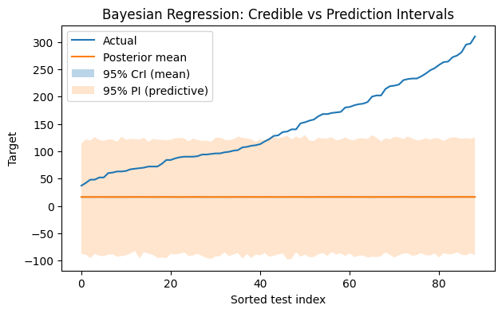
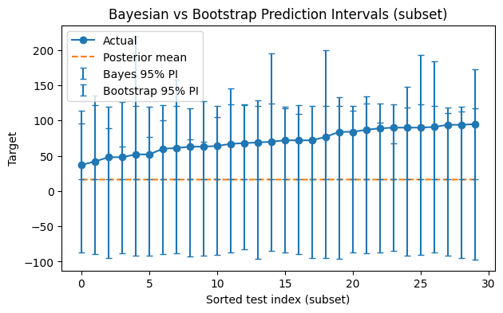

In this lesson we introduce Bayesian linear regression and uncertainty quantificationwithout external PPLs (no Stan). We use: - A closed-form Bayesian linear regression under conjugate priors (Normal prior on coefficients), - A practical bootstrap approximation to predictive uncertainty.
We compare intervals to OLS and discuss when each approach is appropriate.
Learning objectives - Derive and implement a closed-form Bayesian linear regression in NumPy. - Compute credible and predictive intervals via posterior sampling. - Use bootstrap resampling to approximate predictive uncertainty. - Compare OLS CIs vs Bayesian CrIs; understand their interpretations.
Bayesian Linear Regression (Conjugate, Stan-free)
Assume the standard linear model \[
\mathbf{y} \mid X, \boldsymbol{\beta}, \sigma^2 \sim \mathcal{N}(X\boldsymbol{\beta}, \ \sigma^2 I_n),
\] with a Gaussian prior on coefficients (ridge-like prior) \[
\boldsymbol{\beta} \sim \mathcal{N}\!\left(\mathbf{0}, \ \tau^2 I_p\right).
\]
If we treat \(\sigma^2\) as known (or plug in an estimate), the posterior for \(\boldsymbol{\beta}\) is Gaussian: \[
\Sigma_{\text{post}} \;=\; \left(\frac{1}{\sigma^2}X^\top X \;+\; \frac{1}{\tau^2}I_p \right)^{-1}, \qquad
\boldsymbol{\beta}_{\text{post}} \;=\; \Sigma_{\text{post}} \left(\frac{1}{\sigma^2}X^\top \mathbf{y}\right).
\]
For a new sample \(x_\*\), the posterior predictive distribution is approximately \[
y_\* \mid x_\*, \mathcal{D} \ \sim\ \mathcal{N}\!\Big(x_\*^\top \boldsymbol{\beta}_{\text{post}},\ \underbrace{\sigma^2}_{\text{noise}} \;+\; \underbrace{x_\*^\top \Sigma_{\text{post}} x_\*}_{\text{parameter uncertainty}}\Big).
\]
In practice, we will estimate \(\sigma^2\) from OLS residuals (empirical Bayes). This keeps the implementation simple and fast for teaching purposes.
# Closed-form Bayesian linear regression (Normal prior on beta)import numpy as np# Hyperparameter: prior std tau (tuneable). Smaller -> stronger shrinkage.tau =1.0I = np.eye(X_train_i.shape[1])XtX = X_train_i.T @ X_train_iXty = X_train_i.T @ y_trainSigma_post = np.linalg.inv((XtX / sigma2_hat) + (I / (tau**2)))beta_post = Sigma_post @ (Xty / sigma2_hat)# Predictive mean on test sety_mean_post = X_test_i @ beta_post# Predictive variance: sigma^2 + x^T Sigma_post x (diagonal, for each test point)param_var = np.sum(X_test_i @ Sigma_post * X_test_i, axis=1) # diag(X Sigma_post X^T)y_pred_var = sigma2_hat + param_var
# Compute test metrics using posterior mean (point predictions)from sklearn.metrics import mean_squared_error, r2_scoreimport numpy as nprmse_bayes_mean = np.sqrt(mean_squared_error(y_test, y_mean_post))r2_bayes_mean = r2_score(y_test, y_mean_post)print(f"Posterior-mean Test RMSE: {rmse_bayes_mean:.3f}, R^2: {r2_bayes_mean:.3f}")
Posterior-mean Test RMSE: 148.456, R^2: -3.160
Credible & Predictive Intervals via Sampling
We draw \(S\) samples \(\boldsymbol{\beta}^{(s)} \sim \mathcal{N}(\boldsymbol{\beta}_{\text{post}}, \Sigma_{\text{post}})\) and compute predictive draws: \[
y_*^{(s)} = x_*^\top \boldsymbol{\beta}^{(s)} + \varepsilon^{(s)}, \quad \varepsilon^{(s)} \sim \mathcal{N}(0, \sigma^2).
\] Taking percentiles across \(\{y_*^{(s)}\}\) yields prediction intervals; using percentiles of \(x_*^\top \boldsymbol{\beta}^{(s)}\) yields credible intervals for the mean prediction.
# Posterior sampling for intervalsimport numpy as npS =2000# number of posterior samplesbeta_samples = np.random.multivariate_normal(mean=beta_post, cov=Sigma_post, size=S)# Credible intervals for mean prediction (no noise term)y_mean_samples = beta_samples @ X_test_i.T # shape (S, n_test)# Prediction intervals (include observation noise)eps = np.random.normal(loc=0.0, scale=np.sqrt(sigma2_hat), size=y_mean_samples.shape)y_pred_samples = y_mean_samples + eps# Summaries (pointwise 95% intervals)def pct(a, q): return np.percentile(a, q, axis=0)ci_lo, ci_hi = pct(y_mean_samples, 2.5), pct(y_mean_samples, 97.5)pi_lo, pi_hi = pct(y_pred_samples, 2.5), pct(y_pred_samples, 97.5)# Coverage of prediction intervals (fraction of true y in PI)coverage = np.mean((y_test >= pi_lo) & (y_test <= pi_hi))print(f"Approx. test-set 95% PI coverage: {coverage*100:.1f}%")
Approx. test-set 95% PI coverage: 48.3%
# Visualize uncertainty on a sorted index for readabilityimport matplotlib.pyplot as pltimport numpy as npidx = np.argsort(y_test)y_sorted = y_test[idx]y_mean_sorted = y_mean_post[idx]ci_lo_s, ci_hi_s = ci_lo[idx], ci_hi[idx]pi_lo_s, pi_hi_s = pi_lo[idx], pi_hi[idx]plt.figure(figsize=(7,4))plt.plot(y_sorted, label="Actual")plt.plot(y_mean_sorted, label="Posterior mean")plt.fill_between(range(len(y_sorted)), ci_lo_s, ci_hi_s, alpha=0.3, label="95% CrI (mean)")plt.fill_between(range(len(y_sorted)), pi_lo_s, pi_hi_s, alpha=0.2, label="95% PI (predictive)")plt.xlabel("Sorted test index")plt.ylabel("Target")plt.title("Bayesian Regression: Credible vs Prediction Intervals")plt.legend()plt.show()

Bootstrap Approximation (Frequentist but Practical)
The bootstrap resamples the training data to mimic sampling variability: 1. Draw \(B\) bootstrap datasets by sampling \(n\) rows with replacement. 2. Fit an OLS model on each bootstrap sample. 3. Predict on the test set; take percentiles across predictions for empirical prediction intervals.
This is not Bayesian, but it often gives similar intuition about uncertainty without extra libraries.
# Bootstrap predictive intervalsfrom sklearn.utils import resamplefrom sklearn.linear_model import LinearRegressionimport numpy as npB =200# number of bootstrap replicates (increase if time allows)preds = []for b inrange(B): Xb, yb = resample(X_train_i, y_train, replace=True, random_state=1234+ b) m = LinearRegression(fit_intercept=False) m.fit(Xb, yb) preds.append(m.predict(X_test_i))preds = np.array(preds) # shape (B, n_test)def pct(a, q): return np.percentile(a, q, axis=0)boot_lo, boot_hi = pct(preds, 2.5), pct(preds, 97.5)# Coverage (how often true y lies within bootstrap interval)boot_cov = np.mean((y_test >= boot_lo) & (y_test <= boot_hi))print(f"Bootstrap approx. 95% interval coverage: {boot_cov*100:.1f}%")
Bootstrap approx. 95% interval coverage: 28.1%
# Compare Bayesian PI vs Bootstrap intervals on a few pointsimport matplotlib.pyplot as pltimport numpy as npk =min(30, len(y_test)) # plot first k sorted points for clarityidx = np.argsort(y_test)[:k]y_c = y_mean_post[idx]# Bayes PI errors (ensure non-negative magnitudes)bayes_lower = np.clip(y_c - pi_lo[idx], 0, None)bayes_upper = np.clip(pi_hi[idx] - y_c, 0, None)bayes_yerr = np.vstack([bayes_lower, bayes_upper])# Bootstrap PI errors (ensure non-negative magnitudes)boot_lower = np.clip(y_c - boot_lo[idx], 0, None)boot_upper = np.clip(boot_hi[idx] - y_c, 0, None)boot_yerr = np.vstack([boot_lower, boot_upper])plt.figure(figsize=(7,4))plt.plot(range(k), y_test[idx], label="Actual", marker='o')plt.plot(range(k), y_c, label="Posterior mean", linestyle='--')plt.errorbar(range(k), y_c, yerr=bayes_yerr, fmt='none', capsize=3, label="Bayes 95% PI")plt.errorbar(range(k), y_c, yerr=boot_yerr, fmt='none', capsize=3, label="Bootstrap 95% PI")plt.xlabel("Sorted test index (subset)")plt.ylabel("Target")plt.title("Bayesian vs Bootstrap Prediction Intervals (subset)")plt.legend()plt.show()

Confidence vs Credible Intervals (Recap)
Confidence interval (CI): frequency-based coverage under repeated sampling. It does not say “the parameter has 95% probability” in the interval.
Credible interval (CrI): posterior probability statement given data and priors. With a Gaussian prior and large \(n\), CrIs often resemble CIs.
Prediction intervals include observation noise, hence are wider than intervals for the mean prediction.
Exercises
Prior sensitivity: Change \(\tau\) (e.g., 0.3, 1.0, 3.0). How do the credible and predictive intervals change? Report test \(R^2\).
Empirical Bayes for \(\tau\): Choose \(\tau\) by 5‑fold CV, maximizing validation \(R^2\) (hint: mimic Ridge search).
Heteroscedasticity: Replace constant \(\sigma^2\) with a simple variance model \(\sigma^2(x) = \sigma^2 (1 + \gamma |x^\top \beta|)\) and discuss the effect on intervals (simulation).
Bootstrap size: Increase \(B\) to 1000 (if time allows). Do coverage and interval width stabilize?